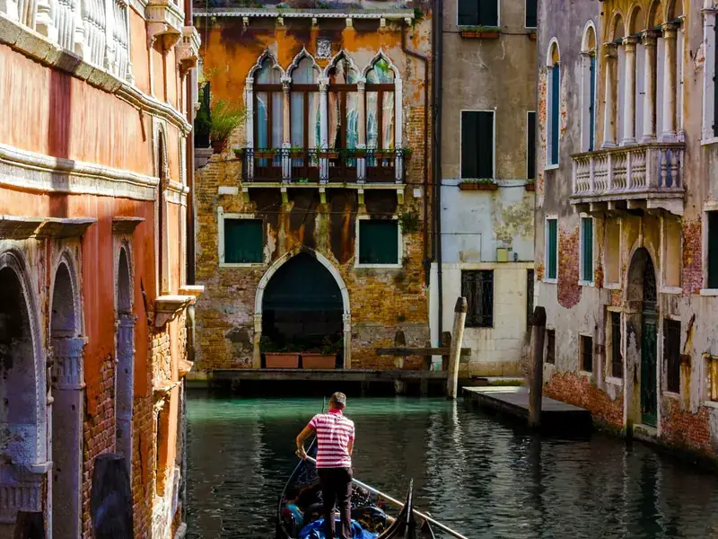
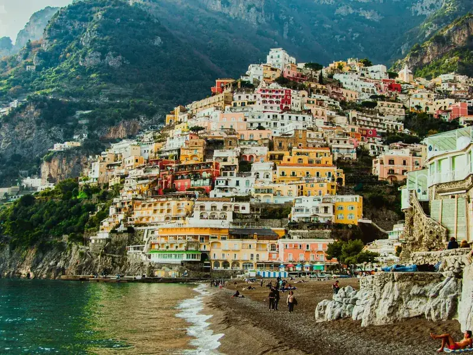
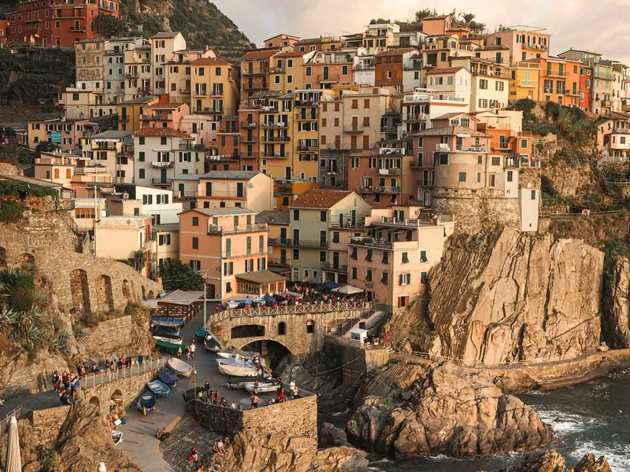

Italy at a glance
EMERGENCY112 (European emergency number)
CURRENCYEuro (€). Cards widely accepted; keep some cash for small places.
PLUGSType F and L, 230 V
TRAINSTrenitalia and Italo for high speed; regional trains for small towns
DRIVINGHistoric centers have ZTL zones with camera fines
TIPPINGNot expected; a "coperto" cover charge is common
🚆 Trains and tickets
 Trenitalia vs Italo: which train to bookRoutes, stations, classes and prices — and when only a regional train will take you there.Read the guide →
Trenitalia vs Italo: which train to bookRoutes, stations, classes and prices — and when only a regional train will take you there.Read the guide → How to validate a train ticket in ItalyWhich tickets need stamping, digital check-in, and what to do if you forgot — avoid on-board fines.Read the guide →
How to validate a train ticket in ItalyWhich tickets need stamping, digital check-in, and what to do if you forgot — avoid on-board fines.Read the guide → Train strike in Italy: what travelers should doGuaranteed time bands and trains, refunds for Trenitalia and Italo, and how to save the day.Read the guide →
Train strike in Italy: what travelers should doGuaranteed time bands and trains, refunds for Trenitalia and Italo, and how to save the day.Read the guide → Cinque Terre by trainCinque Terre Card prices 2026, single tickets, trails and crowd tips.Read the guide →
Cinque Terre by trainCinque Terre Card prices 2026, single tickets, trails and crowd tips.Read the guide →✈️ Airports
 Fiumicino Airport to Rome city center
Fiumicino Airport to Rome city center🚗 Driving
 ZTL in Italy: how to avoid fines when driving
ZTL in Italy: how to avoid fines when drivingBOOK IT
Ready to book?
🚆 Trains in Italy · Omio ↗🏨 Hotels in Rome · Expedia ↗🏡 Holiday homes · Vrbo ↗🚗 Car rental at Rome Fiumicino · Kayak ↗🎟 Skip-the-line tickets · Tiqets ↗✈️ Flights · Aviasales ↗
Affiliate links: if you book, 687 may earn a commission at no extra cost to you.
Plan the whole Italy trip in one app
687 Italy connects trains, flights, hotels, car rental and daily tools like Nearby, translation and weather alerts — before and during the trip.
Planning Japan too? Japan travel guide →